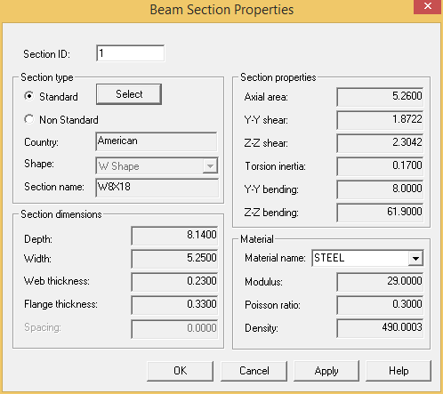

Creating a New AutoPIPE Frame Model
.jpg) In this section you will create a
portal frame as a separate model so that it may be inserted in
other models as well. In this manner, you can create libraries of
support structures.
In this section you will create a
portal frame as a separate model so that it may be inserted in
other models as well. In this manner, you can create libraries of
support structures.
- Select File > Save > Save (if you haven’t already done so) to save the current state of the active
model. You will be creating a new model in the next step and then connecting it to this one.
- Select File > File > New to create the new AutoPIPE model.
- You will build the portal frame using W8x18 beams. So that it can be easily identified, let’s create a unique name for the frame to be included in a library. Enter supz8x18 as the new File name, and then press Save to create the new model file.
- The General Model Options dialog is displayed.
- Input the following values, and then press OK to close the dialog.
Project ID: w8X18 portal frame Prepared by: {your initials} Piping code: B31.1 Power Edition: 2012
Unit file name - Input: AUTOPIPE
Output: AUTOPIPE
- The Segment dialog is displayed. Normally, you would want to name and define the origin points for the first segment in the model. However, since this model will contain only beams and no pipe segments, press Cancel to close the dialog. No starting segment will be defined.
- Select Insert > Structure > Beam Section Properties to begin creating the portal frame.

- Select Standard from Section type section and STEEL as the Material name.
- Click the Select button to open the Section Profile Database dialog.
- Select W Shape from American country section, W8X18 from Select Beam field and Single Section from Type Specification as shown below.
- Click OK to close the Section Profile Database dialog.
-
.jpg) Click OK to
close the Beam Section Properties dialog.
Click OK to
close the Beam Section Properties dialog. - Select Insert > Structure > Beam.
- AutoPIPE creates the default beam name M1. You will now define the name and position of the endpoints defining this beam. Input the following values:
From Point I: 1
To Point J: 2
Point J/ DY offset: 8 (feet) {2400} mm Section ID: W8X18
-
.jpg) Press OK to
accept the values and close the dialog. A single, vertical beam
member is inserted in the model.
Press OK to
accept the values and close the dialog. A single, vertical beam
member is inserted in the model. - You will now build the beam forming the top of the frame. In this example, you want to place a support in the center of the top beam, so you will define the horizontal portion of the pipe rack using two beams of equal distance. This will give a midpoint on the beam at which to place the support. Click on Point 2 to make it the current point and re-select Insert > Structure > Beam to open the Beam dialog. Accept the default Beam ID (M2) and From Point I(2), then input the following values to build the second frame member:
| Note: | Note that the Section ID automatically defaults to the values defined for M1. |
To Point J: 3
Point J/ DZ offset: 4 (feet) {2400} mm
-
.jpg) Press OK to
accept the values and close the dialog. The model appears as shown
below.
Press OK to
accept the values and close the dialog. The model appears as shown
below.
- Point 3 will be the midpoint on the horizontal section of this frame. The next step is to create the second beam to complete this horizontal section. Click on Point 3 to make it the current point and select Insert > Structure > Beam to open the M3 beam dialog. Input the following values, then press OK when done:
To Point J: 4
Point J/ DZ offset: 4 (feet) {2400} mm
-
.jpg) To complete the frame you will
define a second vertical beam. Click on Point 4 to
make it the current point and select Insert > Structure
> Beam to open the M4 beam dialog. Input the following
values, and then press OK when done.
To complete the frame you will
define a second vertical beam. Click on Point 4 to
make it the current point and select Insert > Structure
> Beam to open the M4 beam dialog. Input the following
values, and then press OK when done.
.png)
To Point J: 5
Point J/ DY offset: -8 (feet) {2400} mm
- The model now appears as shown below.